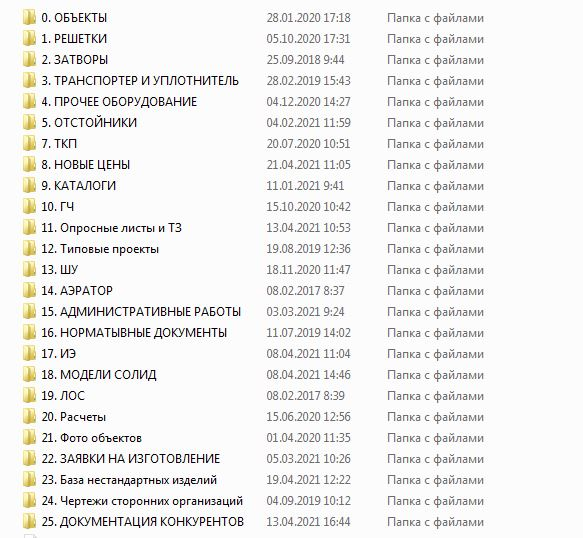

Сруктура внутренних папок
Вся информация по оборудованию Экополимер находится по ссылке: H:\Отделы\ОТО\object (OTONEW)\ОБОРУДОВАНИЕ ЭКОПОЛИМЕР

Рисунок 1 - структруа папок внутренного каталога
| Название папки | Содержание |
| 0. ОБЪЕКТЫ | В данной папке содержиться архив объектов и материалы по ним: исходные данные, чертежи, предложения, расчеты цен для отделов маркетинга. Этов внутренняя папка и доступ к ней имеют только сотрудники ОТО. |
| 1. РЕШЕТКИ 2. ЗАТВОРЫ 3. ТРАНСПОРТЕР И УПЛОТНИТЕЛЬ 4. ПРОЧЕЕ ОБОРУДОВАНИЕ 5. ОТСТОЙНИКИ |
Данные папки содержат информацию необходимую для формирования расчетов по оборудованию. (Эти папки только для чтения) |